Archives Actus Panama-Galapagos
|
Pour consulter une archive, cliquez sur un lieu ci-dessous |
| 2009 Avant le départ |
| 2009 Caraïbes |
| ... |
| 2009 Gambier |
| 2010 Marquises |
| 2010 Tuamotu |
| 2010 Tahiti |
| 2010 Cook-Niue |
| 2010 Tonga - Fidji |
| 2011 Nouvelle Zélande |
| 2012 Australie |
| 2012 Polynésie |
| 2013 Hawaii |
| 2013 Canada |
| 2013 USA |
| 2014 Costa Rica |
| 2015 Costa Rica |
| 2016 Costa Rica |
| ...ou revenez aux actualités |
20 juillet 2009 - Galapagos, ballade en bord de mer
Pour notre dernier jour aux Galapagos, nous avions décidé d'aller à Tortuga Bay qui, comme son nom l'indique, abrite une colonie d'iguanes.
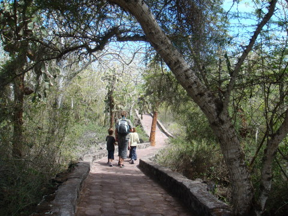
Le sentier serpente dans le bush.
Nous avons donc emprunté un chemin balisé à travers le bush pour rejoindre le littoral. La promenade était assez longue (2.5 km) ce qui donna aux enfants l'idée de baptiser le chemin: la Grande Muraille de Chine. Le petit effort fut bien récompensé car nous débouchâmes sur une plage magnifique.
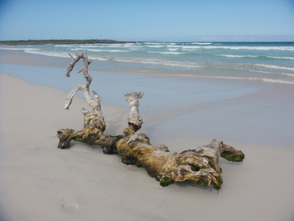
Belle plage, beaux rouleaux, bien amusé.
Pendant que papa faisait l'idiot avec les enfants dans les vagues (avec beaucoup d'entrain, je dois le dire), Cécile partit à la recherche des fameux iguanes. Au terme d'une traque minutieuse, elle aussi fut récompensée et c'est sans compter qu'elle mitrailla ces pauvres bêtes.
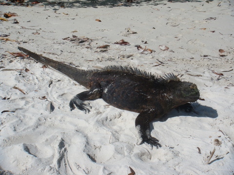
Un bel iguane punk.
19 juillet 2009 - Galapagos, l'obstination paie
Depuis près de 2 semaines, le déssalinisateur me résiste. J'ai tout essayé mais en vain. J'en ai conclus que le problème pouvait venir du bloc pompe. J'ai donc fait des essais de pompage en circuit fermé (ce qui nécessite de déplacer l'unité cde déssalinisation proprement dite). Le verdict est tombé immédiatement, la pompe n°1, bien que ronronnant comme un Siamois, ne débitait plus rien.
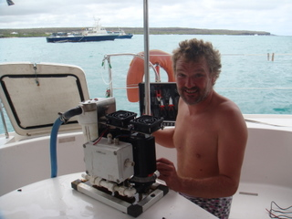
Le bloc pompe extrait de la cale, prêt à être démonté.
Grâce aux heures passées à préparer le bateau en Martinique, j'avais eu la bonne idée de prendre une pompe de rechange, au cas où ce genre d'incident arrivait. J'ai donc remplacé ladite pompe et, après 5h d'efforts pour enlever l'ancienne pompe, remonter la nouvelle, y compris la soudure qui avait cassé, défait et refait les montages électriques et remis en place le déssal, j'ai eu le plaisir de constater qu'il fonctionnait à nouveau.
Je n'ai jamais été aussi heureux que cette nuit là. Nous marchions sur une plage. C'était l'été indien. Ooooooooonnnn n'ira, où tu voudras quand tu voudras, et gneingningin...
Je profite également de la présente pour m'insurger contre ces satanés dinghies qui amènent les touristes du port vers les bateaux des tours opérateurs. En effet, il y a en moyenne une vingtaine de ces bateaux au mouillage devant le port, tout autour de nous, et, par conséquent, au moins autant d'annexes. Nous assistons à un ballet incessant entre le port et les bateaux. Eh bien, figurez-vous qu'un de ces cowboys n'a rien trouvé de mieux que de sectionner notre patte d'oie avec l'hélice de son moteur en passant trop près de la proue du cata.
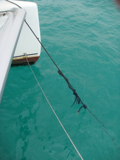
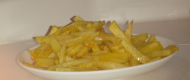
La réparation de fortune sur le brin tribord de la patte d'oie (en attendant de trouver une aussière de 12m). Et les frites d'hier qui étaient succulentes.
18 juillet 2009 - Galapagos, fête nationale
Pour la fête nationale, nous avons décidé de faire un tour dans l'arrière-pays ayoresque. Nous avons chaussé nos plus beaux escarpins afin de découvrir des paysages plus insolites et grandioses que communs et insipides. Nous sommes donc partis à l'aventure, avides de connaître de nouveaux horizons...
Nous avons marché pendant de longues heures sous un soleil de plomb, sans la moindre goutte d'eau pour nous humecter les lèvres. A de nombreuses reprises, nous pensions notre fin proche et ne devons notre salut qu'à notre opiniâtreté. Après plus de 30 minutes de marche, nous avons découvert un canyon désert, perdu au milieu des cactus.
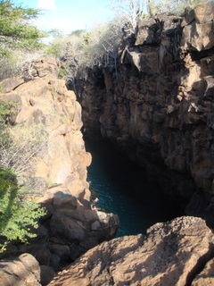
Cañon escondido.
La profondeur de la fissure ainsi que les conditions météorologiques difficiles expliquent sans doute qu'il nous fallut près de 2 minutes pour enfiler nos maillots, gravir les échelles pour rejoindre l'eau qui, curieusement, se révéla peu salée (selon le panneau à l'entrée, il s'agit d'un mélange d'eau de mer et d'eau douce). C'est donc dans un calme total, au milieu d'un désert inviolé que nous avons profité d'une onde rafraichissante.
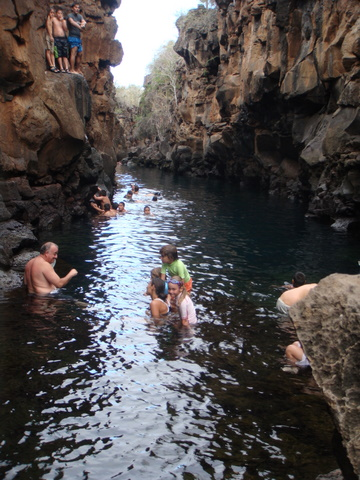
Cañon escondido. Le gros monsieur à gauche, c'est pas moi: je prends la photo.
En tant que découvreurs, nous pouvons baptiser ce lieu de notre choix. Nous l'appelerons Las Grietas, les fissures dans la langue de Cervantes.
Après cette escapade indianajonesque, nous sommes rentrés au bateau où nous avons célébré la fête nationale comme il se doit: steak, frites, salade. Et comme il n'y a pas de friterie à Puerto Ayora, nous avons innové: nous avons péniblement rassemblé nos souvenirs de quand on était petit et qu'il n'y avait pas de frites surgelées. Mais comment faisaient-ils ? Nous avons donc opté pour le pelage des patates, la découpe en frites et la double cuisson dans l'huile (sur ce dernier point, la discussion fut animée puisque ni Cécile, ni moi, n'arrivions à savoir à quoi pouvait bien servir la deuxième cuisson).
Quoi qu'il en soit, le résultat fut probant: de vraies frites sur le bateau, avec un bon steak cuit au barbecue. Vraiment, n'était la date, nous avons bien célébré l'indépendance de la Belgique !.
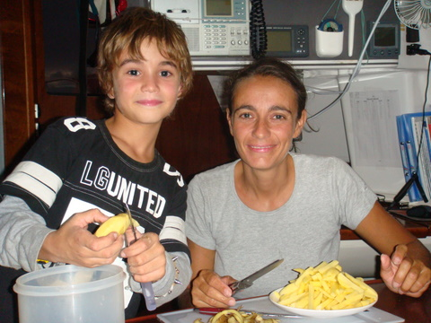
Sidney a pelé les patates et Cécile les a coupées et cuites: un régal.
17 juillet 2009 - Galapagos, Cécile à la poissonnerie
Après la classe (qui se tient chaque jour de 9 à 12, au grand dam des enfants), nous sommes allés faire quelques emplettes. Moi je cherchais un soudeur car le portique des pompes du déssal a lamentablement chût dans la baille à moteur tribord, suite à la rupture d'un joint de soudure (alors que j'étais sur le point de trouver LA panne).
Cécile et les enfants ne cherchaient rien en particulier mais cela ne constitue nullement une raison pour ne rien acheter. En chemin nous avons découvert la poissonnerie à ciel ouvert et, intrigués par les cris, nous nous sommes approchés. Bien évidemment, nous avons pris un ticket avant de nous insérer dans la file, juste derrière un lion des mers (mais devant le booby à pattes bleues qui tentait de resquiller).
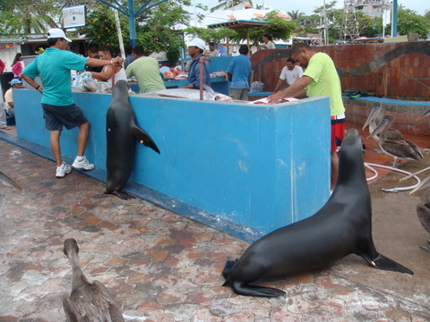
Il n'y a pas de trucage....
Aux Galapagos, rien n'est comme ailleurs. Je vous l'avais bien dit !
16 juillet 2009 - Galapagos, entretien du bateau
Pendant qu'on remplissait notre réservoir d'eau, nous avons également entretenu les coques du bateau. En effet, lorsque nous restons au mouillage pendant quelques jours, des algues commencent à pousser sur les coques, le long de la ligne de flottaison. D'habitude, pendant que les enfants ont classe, j'enfile ma tenue de plongée et, muni d'une petite brosse, je frotte vigoureusement les coques pour enlever systématiquement ces algues (qui reviennent d'ailleurs tout aussi systématiquement).
Ici, nous avons décidé de changer de méthode. Cécile a attrapé et élevé une tortue marine qui, maintenant, vient manger les bonnes algues bien fraîches que nous cultivons.
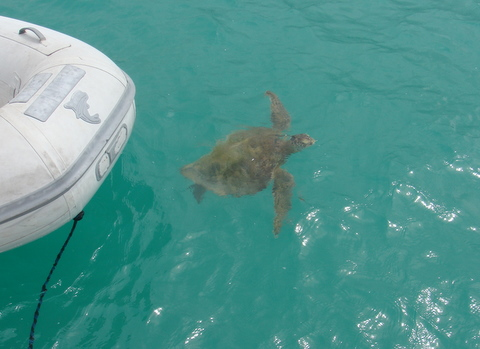
La tortue nettoyeuse arrive.
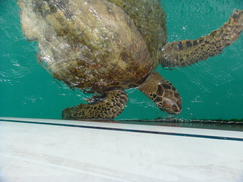
La tortue mange de bonne appétit.
C'est encore un exemple de symbiose propre à ce paradis naturel que sont les Galapagos, au sein duquel nous nous sommes parfaitement intégrés. Si, si, si. Avant de partir, je vais chopper la tortue et en faire un barbecue. C'est le cycle de la nature.
16 juillet 2009 - Galapagos, avitaillement en eau
Depuis qu'on est arrivé aux Galapagos, notre déssalinisateur ne fonctionne plus. Je l'ai déjà démonté et remonté 3 fois, en prenant soin de nettoyer chaque joint et de vérifier chaque pas de vis mais rien n'y fait: l'eau douce sort salée (décidémment, j'aurais dû être plus assidu aux TP de Leduc). Nous n'avons donc plus d'apport d'eau douce depuis le départ de Panama puisqu'en croisière on ne peut pas utiliser le déssal.
Aujourd'hui, nous avons décidé de remplir notre réservoir d'eau. Comme il restait 350L, il nous en fallait 400 de plus. Il n'y a pas de ponton à Puerto Ayora, ce qui rend impossible l'avitaillement par tuyau, comme on le fait d'habitude. Qu'importe, j'ai sillonné le village à la recherche d'un vendeur d'eau. J'ai trouvé une société qui vend des bidons de 20L d'eau douce. J'en ai pris 20 que j'ai fait livrer au port.
Nous avons commencé par transvaser les bidons du quai au dinghy. Il nous a fallu 2 voyages car 200Kg plus Cécile et moi semblait être la charge maximale autorisée pour notre annexe.
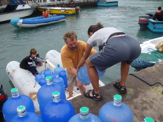
Du quai au dinghy.
Ensuite, nous avons chargé ces bidons sur le Let It Be, ce qui ne fut pas aisé, à cause de la houle. Cécile a d'ailleurs laissé tomber un des bidons dans la mer, ce qui m'a valu un bain forcé.
Une fois tous les bidons à bord, il ne restait plus qu'à les verser dans le réservoir. Afin d'épargner mon dos fragile, j'ai opté pour le siphonnage plutôt que le versage à travers un entonnoir. J'ai donc fini la journée ballonné comme un diodon.
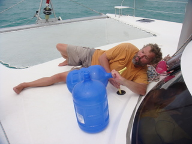
Des bidons au réservoir.
Enfin, il ne restait plus qu'à ramener les 20 bidons au magasin pour récupérer la caution, non sans avoir permis aux enfants de nager un peu dans le cockpit.
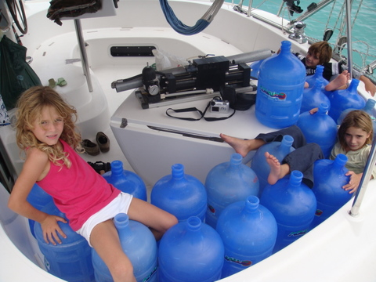
Les bidons, les enfants et ce p... d'... de s... de déssalinisateur sur la table.
Notre réservoir est maintenant plein. L'opération aura quand même nécessité toute une matinée (et 40$).
13 juillet 2009 - Galapagos, procédures d'entrée, suite et fin
D'ordinaire, je suis quelqu'un de posé et calme. S'il m'est arrivé de perdre mon sang-froid, c'était il y a bien longtemps, lors des tractations pour la traversée du canal de Panama, par exemple. Mais, depuis lors, j'ai suivi des cours de yoga par correspondance et j'ai également bénéficié du coaching de Cécile. Je suis donc imperturbable, proche de l'ataraxie. Hélas, quand notre 'agent', ce blanc-bec de 21 ans, est revenu sur mon bateau, sans même me demander la permission de monter à bord, j'avoue que je n'étais pas dans de bonnes dispositions.
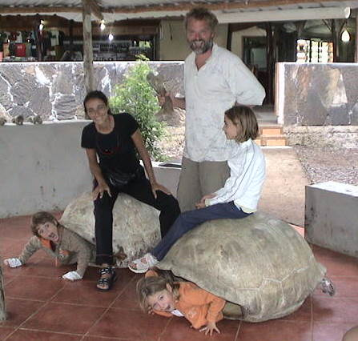
Le racket organisé n'entame pas notre joie de vivre.
Notre 'agent', appelons-le Pedro ou Parasito, comme vous le voulez, Pedro, donc, est venu réclamer de l'argent, à savoir 888$ pour les formalités d'entrée ainsi que les 100 gallons de diesel, que j'ai payé 4$ le gallon alors qu'à la pompe, il ne coûte que 1,02$. Comme je suis quelqu'un dont la rigueur scientifique n'a d'égale que l'acuité intellectuelle, j'ai fait observer à Parasito que le différentiel de coût n'était pas en ma faveur et difficilement explicable. Tout cela en espagnol. Comme il ne comprenait pas, je lui dit: "Demaciado caro".
Loin de se démonter, Parasito m'a patiemment expliqué que le fuel était sponsorisé par le gouvernement mais uniquement pour les locaux. Les étrangers doivent payer le prix plein qui, curieusement était de 2,6$ quand nous étions arrivés mais s'élevait maintenant à 3,3$ plus taxes. Bref, on a payé 3.7$ le gallon et, comme il ne faut pas se gêner quand on a tous les droits, Parasito nous a en sus facturé une permis de fuel délivré par le capitaine du port et des frais de livraison. Comme quoi, dès qu'il s'agit d'inventer des taxes, l'être humain peut être d'une imagination fertile.
Au registre des taxes qui s'apparentent au racket, signalons aussi le certificat de fumigation (60$) que nous avons payé malgré le fait que le maître es-fumigation, ayant visité notre bateau, le déclara sain et exempt d'insectes rampants (ce qui est faux, nous luttons contre les cafards depuis 3 mois). En conséquence, nous n'avons pas eu droit à la fumigation. Mais, cela ne nous a pas empêché de payer le certificat de fumigation, mot qui ressemble à s'y méprendre à fulmination.
Avant de donner l'argent, j'ai demandé de recevoir les papiers pour lesquels je payais. Parasito s'est senti offensé. Drapé dans son honneur blessé, il m'a expliqué que je payais d'abord et je recevrais les papiers dans quelques jours. 'That's the way we do business'. Apparemment, aux Galapagos, le mot business veut dire extorsion. Pour couronner le tout, Parasito nous expliqua qu'il ne pouvait pas encore clôturer la facture parce qu'on pourrait encore à l'avenir faire appel à ses services. Je n'aime pas la vulgarité, mais plutôt crever que de faire appel aux services de ce vautour.
Notre agent est reparti avec mes 850$, l'air assez satisfait. Quel veinard ! Ce type ne doit sa vie qu'à l'intervention in extrémis de Cécile.
12 juillet 2009 - J'aime les Galapagos
Je suppose que je ne vais pas me faire que des amis mais pourtant, il faut bien le dire, les Galapagos, vous devriez venir ! Sans rire, c'est vraiment génial et on vient encore de passer une journée mémorable.
On est parti vers 10h faire un petit snorkeling avec les lions de mer qui, comme tous les animaux du coin, ne sont pas farouches. Ils sont très jouettes et si, comme moi, vous arrivez à retenir votre respiration pendant 10 minutes, vous en profitez un maximum.
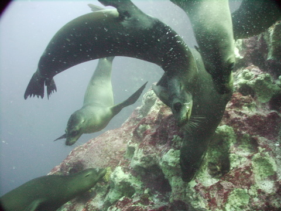
Après les lions de mer, nous sommes allés un peu plus loin, pour patauger avec les requins. Sensations garanties, surtout pour les enfants.
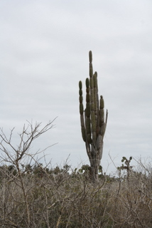
Nous avons alors quitté nos combinaisons de plongée et traversé la bande côtière pour rejoindre les iguanes et les boobies à pattes bleues. Pour ce faire, nous avons marché au milieu d'un décor digne des meilleurs westerns.
Nous avons rejoint une plage de sable organique (composé de restes de lions, de corail, de coquillages et de carapaces de crabe) parsemée de gros galets volcaniques. Grâce à notre patience et à une tenue de camouflage digne de Predator, nous avons pu approcher une famille d'iguanes qui glandaient au soleil.
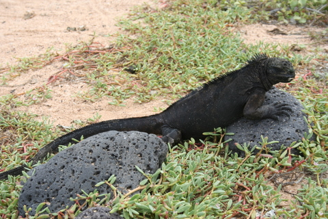
Un mâle (ça se voit, non ?)
Comme nous n'étions pas encore rassasiés, nous sommes allés dans le centre de l'île, pour visiter une ferme à tortues. En fait, c'est un peu comme les vaches: on se promène dans les pâturages et, de temps en temps, on croise une tortue qui nous regarde passer. Il n'y a que des grosses tortues ici car les petites sont élevées sous surveillance pour éviter qu'elles ne se fassent manger par les rats.
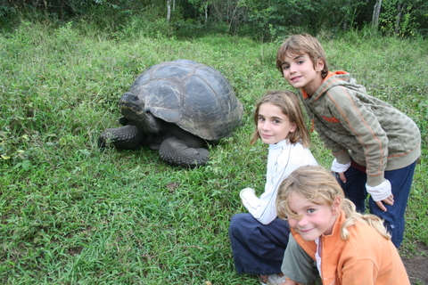
Pour terminer cette journée passionnante, nous avons traversé la terre dans un tunnel de lave. Cette curiosité géologique est due au refroidissement partiel de coulée de lave: le centre de la coulée, plus chaud, est resté liquide tandis que la périphérie s'est solidifiée. Résultat: un tunnel que l'on peut emprunter.
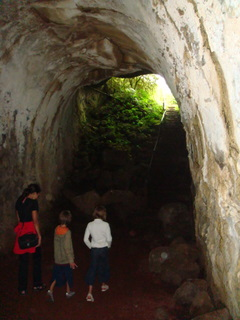
11 juillet 2009 - Promenade en Puerto Ayora
Aujourd'hui, nous avons décidé de visiter el pueblo et de faire quelques courses au marché du matin. Dès l'aube, nous étions prêts pour nous rendormir un peu, ce que nous fîmes sans arrière-pensées. C'est donc vers 9h du matin que nous avons quitté le bateau, toujours ancré dans la baie de Puerto Ayora.
Arrivés au ponton, nous avons pris un taxi. A ce sujet, il est intéressant de constater qu'il n'y a pas de voitures individuelles à Puerto Ayora, à quelques exceptions près. Il semble que ce soit interdit. Il n'y a donc que des pick-ups blancs, qui servent de taxi. C'est assez pratique et cela rend les rues de la ville très agréables à arpenter: pas une seule voiture en stationnement et pas trop de voitures en circulation. Il n'y a d'ailleurs pas de feux de signalisation ici.
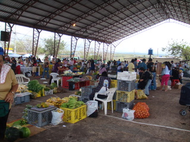
Le taxi nous a laissé près d'un hangar où se tient le marché, chaque samedi et chaque mardi. Nous avons acheté quelques légumes puis nous avons flâné entre les petites échoppes d'où se dégageaient les fragrances les plus diverses. Par l'odeur alléchés, nous nous trouvâmes bientôt à côté du barbecue local à manger un peu de poulet, au grand plaisir des gens du coin. Il faut dire que nous ne passons pas inaperçus et que Syr Daria fait vraiment craquer toutes les femmes que nous croisons.
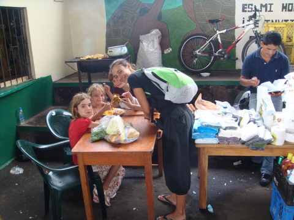
Cécile et sa progéniture, dévorent, affamés, un poulet grillé
Après ce petit intermède culturel, nous nous sommes promenés dans les rues. Précisons d'emblée que les conditions météo sont redevenues normales: 26°C et humidité acceptable (fini de mariner dans mon jus pendant mon sommeil, je passe enfin des nuits agréables). Au niveau climatique, l'île sur laquelle nous nous trouvons est assez typique: le pourtour est relativement plat et aride, le centre s'élève jusqu'à 800m d'altitude et, sur le versant sud, la végétation est luxuriante: bananiers, daturas, hautes herbes, cedrelas, etc. Au nord, la végétation tient plus du maquis, brûlée par le soleil et peu arrosée. Quand on traverse l'île de part en part, le contraste est vraiment saisissant, à tel point qu'hier, nous sommes partis sous un fin crachin et un ciel plombé et, dès notre passage de la ligne médiane, le ciel s'est dégagé pour faire place à un grand soleil.
11 juillet 2009 - Petit intermède médiatique
Chers amis, vous êtes nombreux à suivre notre périple. Je vous en remercie et je vous confirme que nous sommes tous sensibles à votre attention, même si nous ne pouvons pas toujours vous faire ressentir nos émotions.
Je profite de l'occasion pour vous dire qu'il est possible de commenter les billets des actualités. Certains d'entre vous le font déjà. Il suffit de cliquer sur le lien 'Comments' pour consulter les commentaires existants ou en ajouter d'autres.

Cliquez sur la zone entourée pour ajouter des commentaires
10 juillet 2009 - Galapagos, plongée en eau calme
Aujourd'hui, nous avions décidé de nous jeter à l'eau. Nous avions contacté Santiago afin qu'il nous emmène plonger au large. On lui avait expliqué que nous avions 3 enfants et qu'on souhaitait leur faire découvrir les joies du snorkeling, à défaut de pouvoir plonger avec bouteille.
Vers 8h du matin, nous sommes partis de Puerto Ayora en pick-up Toyota, direction le nord de l'île. Nous étions 9: nous 5, Santiago le Dive Master, le Capitan, le Taxi driver et le Marinero qui s'occuperait de nos enfants pendant que nous plongerions.
Nous avons traversé l'île du sud au nord sur environ 40 km, avant d'arriver à un petit port où nous attendait une barque. Après 20 minutes de croisière, nous arrivions sur le site de plongée. Nous avons enfilé notre tenue d'agent secret (comme disent les enfants), à savoir une combi en néoprène, des chaussons et même une cagoule. Sans oublier le matos de plongée proprement dit. Il faut dire que la mer est assez froide: autour de 21°C.
Nous nous sommes assis sur le rebord de la barque et Santiago a lancé le compte à rebours: 3, 2, 1, GO. Nous nous sommes jetés en arrière. Dès la première minute, ce fut magnifique: des bancs de poissons multicolores et peu farouches. Nous avons passés 45 minutes de pur bonheur à nous faufiler parmi tous ces poissons, réunis en bancs familiaux.
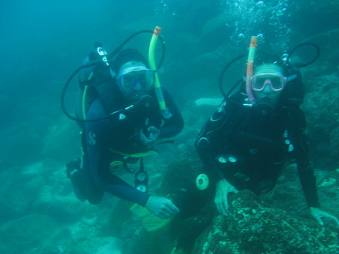
C'est nous dans la grande bleue
A notre retour, nous avons pu échanger nos impressions avec les enfants: pendant que nous évoluions sous l'eau, ils avaient nagé en surface, avec les lions des mers.
Un peu plus tard, la deuxième plongée s'annonçait encore plus spectaculaire: nous avions rendez-vous avec les requins. Et, il faut bien le dire, nous n'avons pas été déçus. Nous avons plongé au milieu des requins et, en remontant, nous avons croisé un groupe de raies qui évoluaient lentement à quelques mètres de la surface. Pour une première plongée en eau libre, nous avons été émerveillés de la première à la dernière minute.
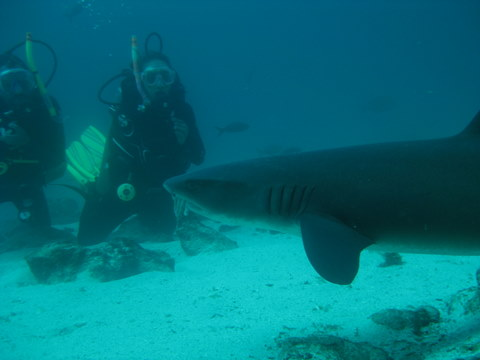
Même pas peur
Cerise sur le gateau: en rentrant, les enfants ont pu rester sur la plate-forme arrière du pick-up, en plein air. Quelle aventure !
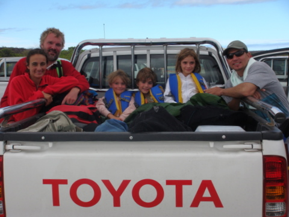
Le pick up, les enfants et Santiago, notre GO et Dive Master (et TOYOTA ne me paie pas)
9 juillet 2009 - Galapagos, procédures d'entrée
Je n'aime pas dire du mal des gens (comme chacun sait) mais, vraiment, l'entrée aux Galapagos s'apparente plus à un vol en bande organisée qu'à une formalité administrative. Or donc, après notre traversée musclée, nous sommes arrivés pas frais et pas dispôts dans le 'port' de Puerto Ayora (c'est pas moi qui le dit). Comme nous sommes des citoyens respectueux des usages, nous avons essayé de nous rendre à la capitainerie du port pour les formalités d'entrée. Hélas, le water taxi n'a pas voulu nous amener à terre: il fallait d'abord passer l'inspection. Excellent, avons-nous pensé naïvement: "Si tu ne viens pas zau capitaine, le capitaine viendra za toi". Nous voulions rencontrer le capitaine et voici qu'un de ses représentants venait vers nous, certainement soucieux de nous éviter des embarras. Le représentant en question était un petit monsieur aux souliers vernis et à l'uniforme étriqué mais impeccablement repassé, frappé de l'écusson honorable des autorités du port d'Ayora. Il était accompagné d'un gamin avec une casquette à l'envers et de baskets à semelles plates. Ce dernier était notre 'agent' qui allait nous aider à faire les formalités, bien que nous n'ayons absolument rien demandé (et qu'en plus, nous ne l'avions pas invité à monter à bord, ce qui, apparemment ne l'inquiétait nullement) A peine arrivé, le fonctionnaire nous expliqua en regardant la pointe de ses souliers, décidément bien vernis, qu'il fallait payer la capitainerie, les phares et bouées, les visas, le droit de sortie, la fumigation, l'entrée dans le parc et, bien sûr, l'agent ci-présent. Le tout pour la modique somme de +/- 600$. Le monsieur ne rigolait pas. Etant moi-même adepte de cette technique qui consiste à dire n'importe quoi pour se réjouir de la mine déconfite de mon interlocuteur, je me targue de pouvoir démasquer les petits malins qui tentent de m'abuser. Cet individu n'en faisait pas partie. Il ne rigolait pas. Nous avons donc poliment acquiescé et avons salué le petit fonctionnaire qui repartait avec ses souliers vernis.
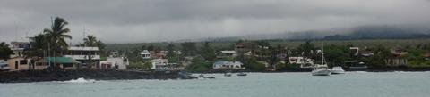
Le petit port tranquille Puerto Ayora
Le lendemain, notre 'agent' est revenu pour faire les comptes. Je lui ai quand même demandé pourquoi on devait passer par un agent. Il m'a répondu, très sérieusement, que les agents facilitaient les rapports avec les autorités, notamment au niveau des langues. D'une part, la collusion entre intérêts privés et publics ne semble pas émouvoir grand monde, d'autre part, notre 'agent' ne parle que l'espagnol, ce qui n'a pas facilité grandement nos rapports avec les autorités sur le plan linguistique.
Enfin, soyons optimistes, les tarifs ont déjà diminué depuis hier et on n'a encore rien payé. Si on laisse les choses se tasser, on finira par trouver un accord acceptable.
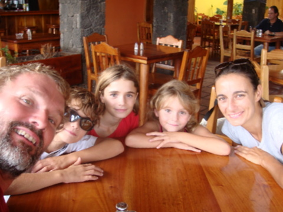
On garde le moral !!
Par ailleurs, il faut signaler qu'à part ces sangsues avides d'argent, les habitants du coin sont plutôt cools. Et la faune est définitivement peu farouche et étonnante. Nous avons bien évidemment pu observer les otaries qui dorment, ventre au soleil, sur l'unique ponton du port. Plus étonnant, nous avons déjà vu passer au large de notre bateau des tortues, des raies tachetées et même des petits requins blancs. Tout cela nous invite à visiter le pays plus avant.
9 juillet 2009 - Galapagos
Un tout petit texte pour annoncer au monde que nous sommes en sécurité au mouillage dans la baie de Puerto Ayora, aux portes du Parc National des Galapagos. Les communications ne semblent pas constituer le point fort du coin, raison pour laquelle je me contente d'un petit billet. Demain, nous allons plonger avec les tortues, les phoques et les raies et je vous promets de vous faire un topo plus détaillé parce que cela en vaut réellement la peine...
7 juillet 2009 - Traversée vers les Galapagos J7
A l'approche des îles, qui ne sont désormais plus distantes que d'une cinquantaine de miles, le vent a enfin tourné légèrement à l'est. Nous avons donc pu infléchir notre course au sud pour nous diriger vers les îles. Hélas, nous avons pu constater à ce moment que le courant d'ouest nous poussait vigoureusement, à tel point que notre changement de cap compas ne modifiait pratiquement pas notre trajectoire réelle: nous dérivons avec le courant et force est de constater que nous n'arriverons pas à toucher terre sans utiliser le moteur.
Enfin, après exactement une semaine de navigation, dont 7 jours au près, nous sommes arrivés à hauteur de Isla Genovesa, première île de l'archipel. Nous avions échafaudé un plan secret de belle facture: faire une visite de cet îlot caillouteux et aride en toute discrétion (et contre toutes les lois en vigueur). Hélas, notre plan génial s'est effondré lamentablement: il y avait 2 bateaux de taille moyenne au mouillage dans la baie Darwin. Il s'agissait de petits bateaux à moteur d'une dizaine de cabines, à vue de nez. Vraisemblablement, des bâtiments affrétés par les tour-operators pour la visite des îles. Ce sont les seuls autorisés à mouiller ailleurs que dans l'un des 4 ports officiels. Si nous mouillons, ils peuvent nous dénoncer par radio et nous risquons une amende.
Il faut savoir que l'archipel des Galapagos est un parc national très règlementé. Seuls 4 ports sont autorisés aux bateaux de passage, et, à moins d'avoir obtenu un permis de croisière spécial auprès des autorités équatoriennes, il est strictement interdit de mouiller ailleurs que dans un de ces ports et encore plus interdit de mettre les pieds à terre. Et comme ce genre de permis est réservé aux expéditions scientifiques, nous n'en avons pas et devons encore faire 80 miles au moteur pour rejoindre Puerto Ayora, plus au sud. Pour être tout-à-fait rigoureux, on pourrait aussi faire les 80 miles en tirant des bords à la voile, sans utiliser le moteur. Avec le Let It Be, cela prendrait 3 jours, à condition toutefois que le vent change de direction entretemps.
Vers 21h, nous avons franchi l'équateur et nous avons bu le coca. Nous sommes dorénavant dans l'hémisphère sud, où tout est possible.
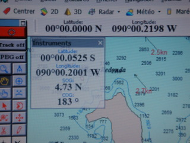
Le passage de l'équateur (j'ai bien regardé, il n'y a pas de ligne en pointillé dans la mer)
6 juillet 2009 - Traversée vers les Galapagos J6
Rien à signaler. Cap WSW, 250. Vitesse, 6 à 8 noeuds. Pas moyen d'aller plus au sud, car la direction du vent ne change pas: toujours 190 (SSW). Caramba, on va passer au nord des Galapagos.
On a eu la visite de 2 frégates ce matin. Elles se sont posées sur la filière bâbord et ont entamé un brin de toilette.
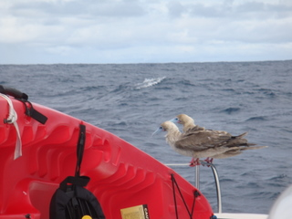
Cécile soutient que ce sont des booby à pattes rouges
Dans la journée, j'ai remplacé le pavillon de complaisance du Panama par celui de l'Equateur, puisque les Galapagos font partie de ce pays. Pour les curieux, sur un bateau, un pavillon n'est pas une maison cossue en banlieue mais un drapeau (de petite taille, en général, très grand, si on est américain). En général, en plus du pavillon officiel qui indique la nationalité de votre bateau et dont la présence est obligatoire, il est de bon ton de hisser dans les haubans un petit pavillon de courtoisie ou de complaisance, aux couleurs du pays que vous visitez. Ce n'est pas obligatoire mais cela relève de la plus élémentaire politesse marine. Cela suppose également que vous avez intelligemment planifié votre voyage et emporté les pavillons nécessaires. J'ai également hissé le pavillon jaune qui indique que nous n'avons pas encore effectué les formalités d'entrée dans le pays. Il paraît qu'ils sont pointilleux par ici alors nous ne prenons pas de risques.
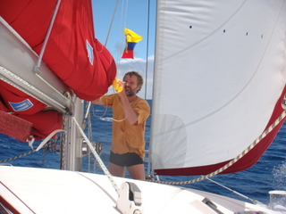
5 juillet 2009 - Traversée vers les Galapagos J5
"- This is US Navy. Do you copy ?
- Euh, this is ze catamaran. Are you talking to us ?
- Yes, Madam. Could you identify your vessel ?
- It is the Let It Be, like the song of the Beatles".
Voilà un extrait du dialogue échangé sur la VHF canal 16 entre Cécile et un hélicoptère de la US Navy qui volait au-dessus du bateau ce matin. Apparemment, la US Navy contrôle les divers trafics au large des côtes colombiennes. Ils nous ont posé beaucoup de questions, très poliment, et nous avons répondu, tout aussi poliment. Ensuite, ils ont compris qu'on ne céderait pas sous la menace et ils ont disparu dans les nuages.
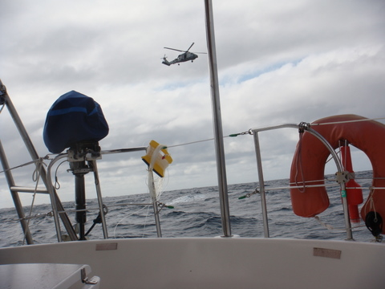
La US Navy surveille les narco-trafiquants
Quand je vous disais qu'il se passait toujours quelque chose en traversée ;-). Curieusement, l'hélicoptère est venu droit sur nous en venant du nord ouest, c'est-à-dire en plein océan. Nous étions absolument seuls et n'avions pas croisé le moindre bateau, cargo ou voilier, depuis près de 2 jours. Conclusions:
Comme quoi, même seuls en pleine mer, Uncle Sam n'est jamais très loin. C'est à la fois rassurant et inquiétant. Comme le faisait remarquer Cécile, on n'aurait été moins à l'aise si l'on avait été contacté par l'armée colombienne...
A part cela, le vent s'est levé en fin de journée hier, s'établissant autour des 18 noeuds, au sud sud-ouest(SSW), cap 190. Cela nous a permis de faire route ouest sud-ouest (WSW), cap 250, et de battre notre record de distance en 24h: 173 nm, soit 7.2 noeuds de moyenne. Et au près, s'il vous plaît. Autant vous dire que nous avons bien mérité notre médaille.
En effet, au près, le bateau prend les vagues de trois quarts. Pour un catamaran bâbord amure (le vent vient de la gauche), cela veut dire : l'avant-gauche se soulève, puis l'arrière-gauche en même temps que l'avant-droit. Avec la vitesse, le bateau semble alors propulsé vers l'avant mais, passée la crête de la vague, le bateau retombe lourdement, en piquant du nez vers l'avant-gauche.
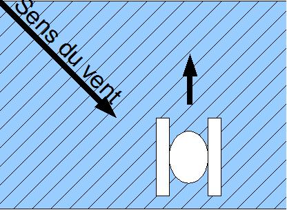
Le truc blanc, c'est le Let It Be, pas le vaisseau de Darth Vador. Les lignes obliques noires représentent les vagues qui, en général, avancent dans le sens du vent.
A ce sujet, nous avons eu pas mal d'eau de mer sur le pont durant notre nuit venteuse. Dès qu'il a commencé à faire clair, on a pu compter les cadavres sur le pont. Pas moins de 8 calamars et 5 poissons volant, gisant ça et là, dans les cordages, sur le rouf, dans le cockpit. On a même retrouvé un calamar sur le bimini. On se demande toujours comment il a fait pour arriver là !
Battre notre record de vitesse est certes gratifiant mais toute médaille a son revers. Dans ce cas, c'est l'impossibilité de faire quoi que ce soit durant la navigation. Le bateau bouge tellement que lire ou écrire est impossible. Même regarder un film est inconfortable. Se déplacer, même sur une distance aussi courte que celle qui sépare le carré du cockpit, est un exploit qui doit se planifier soigneusement: où va-t-on mettre les pieds ? Y a-t-il une prise pour les mains ? Si j'échoue, ai-je un plan de retrait ? Toutes ces questions doivent être envisagées avant le départ. Ensuite, il faut attendre le moment propice. Généralement, après une grosse vague, le bateau frappe la surface de l'eau violemment, puis, pendant quelques secondes, le temps semble suspendu. C'est à ce moment qu'on s'élance en priant...
Et je ne vous parle pas de faire la cuisine. Faire un spaghetti au thon nécessite un entraînement physique intensif. Non seulement il faut arriver à rester debout dans la cuisine, ce qui n'est pas évident mais, en plus, il faut peler les oignons, l'ail et les tomates, lesquels roulent à gauche et à droite, puis ouvrir la boite de thon sans mettre de l'huile partout et faire fristouiller le tout dans une casserole qu'il convient de tenir fermement en surveillant du coin de l'oeil l'autre casserole, où l'eau chauffe pour les pâtes. Pour garder l'équilibre, on fait comme quand on descend une pente abrupte: on fait des petits pas en agrippant tout ce qu'on peut avec les mains pour stabiliser. Je vous le confirme: on mange plus souvent des tartines que des pâtes quand on fait du près à plus de 7 noeuds.
4 juillet 2009 - Traversée vers les Galapagos J4
Independance Day. J'écris la main sur le coeur en pensant à tous les laisser-pour-compte du capitalisme que nous avons croisés sur leur catamaran. La plupart n'avait même pas de mât rotatif en carbone ! Quelle misère. Par contre, ils ont tous un pavillon XXL.
En attendant, vers 10h ce matin, l'événement que nous attendions depuis près de 24h est arrivé: le vent a tourné au sud. Nous avons immédiatement déroulé le génois et coupé les deux moteurs pour la première fois depuis le départ. A l'heure qu'il est, nous faisons route au 270 à +/- 5 noeuds. Si nous tenons ce cap, nous ne raterons les Galapagos que de quelques dizaines de miles. Mais, rassurez-vous, selon Monsieur Météo, à l'approche de l'archipel, le vent devrait virer légèrement à l'est, ce qui nous permettra d'incurver notre trajectoire au sud.
Comme on ne navigue plus contre le vent, le bateau est nettement moins secoué qu'auparavant. Nous en avons profité pour vider 4 de nos jerrycans dans le réservoir. Cet exercice apparemment anodin s'est révélé fort salissant. Il est en effet difficile de tenir un bidon de 20L en équilibre au-dessus d'un entonnoir pendant toute la durée de la vidange, même quand la mer est relativement calme. Bref, Cécile, moi et le compartiment du réservoir avions les mains pleines de gasoil.
3 juillet 2009 - Traversée vers les Galapagos J3
Nous voguons toujours vers le sud mais sans voile car nous avons le vent dans le nez.
La traversée se poursuit donc entre 4 et 5 noeuds, toujours rythmée par les mouvements saccadés du bateau. Pour la première fois, on regrette de ne pas être en monocoque: cela nous éviterait d'entendre la mer frapper la nacelle avec violence, au point que le PC sur lequel j'écris fait des bonds sur la table à carte.
Je suis sûr que d'aucuns parmi vous se demandent ce que l'on fait pendant les traversées. En ce qui concerne les enfants, c'est relativement simple: ils dorment de 21 à 7h, se lèvent et attendent qu'on leur serve le petit déj. Ensuite, ils se vautrent dans les fauteuils du carré en jouant à la DS ou en regardant des films. Vers 13h, ils ont faim et attendent qu'on leur fasse des tartines. Puis, ils se remettent au travail: film ou DS. Vers 16h, c'est l'heure de manger un petit fruit que maman leur coupe. Ensuite, c'est quartier libre: DS ou film. Vers 19h, papa sert à manger et, pour terminer la journée, maman joue aux cartes avec les enfants. Grâce à ce programme, ils ont déjà vu 18 fois Jack Sparrow, remporté 122 circuits à Mario Cart et mangé 2 tonnes de pommes depuis notre départ.
Pour être honnête, il y a quand même quelques variantes: Kenya refuse de prendre un anti-nauséeux. Elle passe donc les traversées dans sa cabine, avec un saladier à ses côtés. Cécile vient régulièrement lui apporter de la nourriture, lui tenir compagnie et nettoyer le saladier. Parfois, un événement inattendu trouble le rythme de la journée: un cargo qui passe, un banc de dauphins, une baleine ou papa qui installe et désinstalle le matériel de pêche.
En ce qui concerne les parents, c'est tout aussi régulier mais un peu moins médiatique. Sur cette traversée, je prends le premier quart de 21h à minuit. Cécile met les enfants au lit puis rejoint sa cabine. Pendant ce temps, j'erre sur le pont, désoeuvré. S'il fait beau, je regarde les étoiles, j'écoute la mer et je pense à vous. Quand il fait mauvais, je reste à la barre et j'essaie de garder le contrôle en allant régulièrement consulter le radar pour y détecter les grains et les éventuels bateaux que l'on croiserait.
Vers minuit, le réveil sonne et Cécile se réveille. Elle me rejoint sur le pont et je lui fait un rapport succinct des derniers événements. Ensuite, je vais dormir. Cécile est nettement plus active que moi pendant ses quarts. Elle fait la vaisselle, lit ses mails et y répond, lit le site et corrige les fautes d'orthographe tout en surveillant le bateau du coin de l'oeil.
Vers 3h du mat, on échange nos positions: à moi le pont, à elle la cabine. Je me fais une petite soupe de nouilles pour tenir la route et je recommence à glander sur le pont. Je rejoins parfois ma position favorite: couché sur le rouf, en dessous des voiles. Vers 6h du mat, on échange à nouveau nos positions: à moi la cabine, à Cécile le pont. Comme elle assure le quart de 6 à 9h du matin, Cécile s'occupe de faire le pain. Il faut en effet 4h pour l'obtenir et il convient donc d'en commencer la préparation entre 8 et 9h si l'on veut le manger chaud le midi.
Ce petit pas de deux rythme nos nuits et, un peu comme le jour et la nuit, nous nous croisons sans cesse, sans jamais rester longtemps ensemble. En effet, même pendant la journée, on continue nos quarts car on est crevé. On a quand même un peu de temps à nous entre 13h et 21h. On en profite pour écouter un peu de musique, faire à manger, pratiquer un sport vain comme la pêche, mettre le site à jour (ce qui prend parfois beaucoup de temps), entretenir le bateau à grands coups de serpillière, donner quelques cours particuliers aux enfants ou lire avec les enfants. Nous passons également pas mal de temps à conjecturer sur l'évolution du vent ou l'état de la mer, ce qui nous permettrait soit d'arriver plus vite, soit d'augmenter notre confort. Il n'est pas rare qu'au terme d'une de ces réflexions, nous décidions de changer d'allure, ce qui implique généralement des manoeuvres de pont dont le résultat n'est que rarement significatif mais qui prennent toujours beaucoup de temps et d'efforts.
2 juillet 2009 - Traversée vers les Galapagos J2
Tout d'abord, je tiens à remercier tous ceux qui lisent le site régulièrement et m'envoient des petits mots d'encouragement. Cela me touche et me porte à continuer. Merci à tous.
Nous sommes partis de l'archipel des Perlas vers un autre archipel, bien plus célèbre: celui des Galapagos, le 1er juillet.
La traversée fait quelques 850 nm à vol d'oiseau, soit environ 1500 km. Malheureusement, le vol d'oiseau est impossible à suivre pour les voiliers. D'abord parce qu'il faudrait traverser une péninsule et puis, surtout, à cause des vents. En cette saison, ils sont de secteur sud, voir sud ouest dans le golfe de Panama. Donc, il est impossible d'aller droit au but. Selon mes calculs, on devrait naviguer environ 1050 nm avant de toucher terre: 400 nm vers le sud puis 650 nm vers l'ouest.
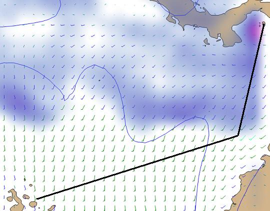
La trajectoire prévue (les petites lignes représentent la direction du vent, l'empennage indique le sens et la force et le halo bleu indique les zones pluvieuses. Dans ce cas, vent du sud à 10-15 noeuds au sud de la zone, du sud-ouest à 5-10 noeuds au nord-est de la zone, variable dans le golfe et pluie sur la moitié nord avec orage près des Perlas. Ce diagramme des vents est celui qui prévalait au milieu du 2ème jour de traversée pour nous)
Voilà donc 2 jours que l'on file presque plein sud, à la voile et au moteur. Pourquoi ne pas filer droit au moteur ? Parce que nous n'avons pas assez de carburant pour faire 850 nm, surtout contre le vent. Nous devons donc essayer d'utiliser les voiles autant que possible. Pourquoi ne pas utiliser que les voiles, dans ce cas, me feront observer les plus assidus d'entre vous ? Parce que d'une part le vent est trop faible, de l'ordre de 6 à 10 noeuds et qu'en plus il souffle de sud ouest. Cela veut dire que nous sommes au près. Et comme notre catamaran ne dispose pas de dérives, si nous coupons les moteurs, nous allons dériver dans le sens du vent et nous irons en Colombie au lieu des Galapagos.
Pour ne rien arranger, les grains se succèdent assez régulièrement, ce qui nous oblige à être attentifs puisque le vent peut grimper jusqu'à 30 noeuds en quelques minutes. Enfin, pour couronner le tout, on est dans un golfe au niveau de l'équateur, en pleine zone de convergence intertropicale. En conséquence, ni la mer ni les vents ne sont réguliers. En un mot: ça cogne. Mais j'arrête de me plaindre. Que sont 3 jours d'inconfort par rapport aux merveilles qui nous attendent ?
29 juin 2009 - Las Perlas
Pour finir, on a trouvé une petite crique déserte non loin d'un village appelé Pedro Rodriguez (ça ne s'invente pas). On est super tranquille et le soleil est revenu. Bref, on retrouve la vie normale: 32°C, 100% d'humidité et classe pour les enfants.
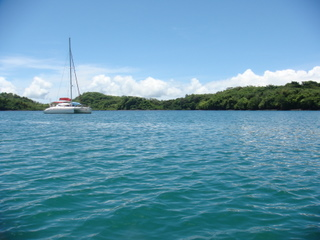
Let It Be seul au mouillage
On a quand même eu une petite frayeur quand le cordage de fixation du nouveau trampoline a subitement laché sous mes 75 kg (+/-). J'ai failli me retrouver à l'eau et je ne dois mon salut qu'à un entraînement intensif aux techniques de survie en milieu hostile ainsi qu'à mes réflexes de Jedi. Bref, j'ai réparé et renforcé la fixation du trampoline pendant que les enfants suaient à l'école.
Un peu plus tard, on a eu la visite de Marcel, sur sa pirogue, pour nous demander si nous voulions des fruits, des légumes ou de la marijuana. J'ai opté pour les 2 premiers car l'absorption de narcotiques est mauvaise pour la santé, comme je le dis souvent à mes enfants. J'ai peut-être eu tort car les nuits risquent d'être longues durant la traversée du Pacifique. Enfin, au moins on a des tomates, concombres, avocats, mangues et bananes en suffisance.
28 juin 2009 - Las Perlas
Diablos ! On avait oublié le marnage. Eh oui, dans le Pacifique, il y a des marées, au contraire des Caraïbes. Quand on s'est approché de la baie, on se demandait pourquoi tous le monde mouillait par 9m de fond. Après, on a compris: on était arrivé à marée haute et quelques heures plus tard, le niveau de l'océan avait baissé de plus de 4m. Heureusement que nous avions renoncé, quelques minutes plus tôt, à un superbe mouillage désert, sur l'île voisine, par 4m de fond. On se serait échoué...
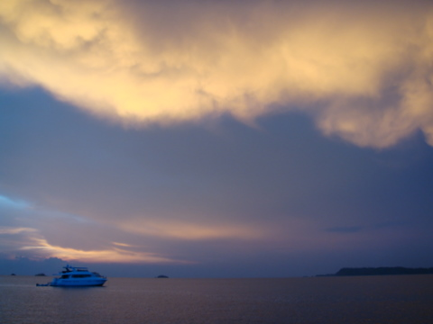
Le bateau était blanc mais la lumière crépusculaire
ReDiablos ! J'avais planifié une petite navigation tranquille de 14 nm et il n'y avait pas de vent. Nous sommes donc partis le coeur léger. Après une heure, nous avons vu arriver une barre grise. Le vent de sud a graduellement forci, tout comme la mer, puis la pluie s'est mise à tomber. En 1/4 heure, ce fut le déluge: 35 à 40 noeuds de vent et une pluie tropicale. On n'y voyait rien et les moteurs tournant à 2200 tours nous maintenaient péniblement sur place. Résultat: près de 5h pour faire les 14 nm.
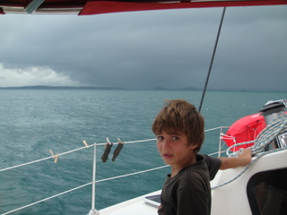
27 juin 2009 - Balboa - Las Perlas
Avant d'entamer la grande traversée, nous avons fait du shopping, à la recherche d'un nouveau BBQ et d'une station météo pour remplacer la nôtre, défectueuse. Nous avons également fait le plein de gasoil, y compris les 15 jerrycans, dans la marina la plus huppée de Panama (on a préféré un mouillage forain aux 150$ qu'ils demandaient pour la nuit :-)). Au total, nous emportons près de 700L de carburant.
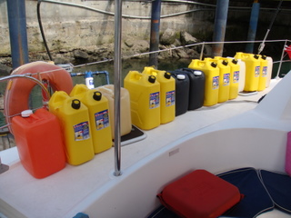
On a dit 'Au revoir' au continent et nous sommes partis vers le sud ouest, en direction des Perlas, un archipel situé à 30nm. Comme d'habitude, il faisait super humide et Panama City disparaissait lentement dans la brume à mesure qu'on gagnait le large.
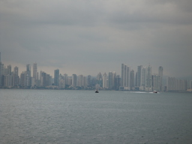
En chemin, nous avons croisé deux baleines qui sont nonchalemment passées devant notre proue, en respirant bruyamment toutes les minutes. C'est la première fois que nous voyions ces cétacés en navigation et nous étions tous émus. Syr Daria était très impressionnée par la taille de la queue des baleines.
A Panama, nous avons acheté une nouvelle ligne de traîne, afin d'encore augmenter nos prises de poisson. Nous l'avons baptisée ligne S, comme Sidney et 'small', parce qu'elle est plus fine que les autres et que c'est Sidney qui en est responsable. On l'a mise à poste par tribord et on y a fixé une clochette artisanale pour attirer notre attention dès qu'un poisson mordrait à l'hameçon. Comme je l'ai expliqué à Sidney, notre échec précédent est entièrement imputable au matériel inadéquat: nous étions équipés 'Pacifique' alors que nous étions dans les Caraïbes.
Nous avions de surcroit des hameçons de taille à ferrer des thons de 100 kg, ce qui n'aurait pas permis à Sidney de ramener le poisson. Maintenant tout est rentré dans l'ordre, nous sommes dans le Pacifique et nous avons la ligne S. Ce n'est donc plus qu'une question de semaines maintenant, avant qu'on attrape enfin quelque chose.
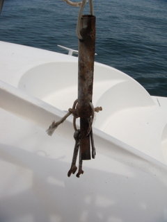
25 juin 2009 - Lac Gatun - Balboa
Nous nous sommes levés à 6h du matin et vers 6h30, le nouvel advisor est arrivé. Nous sommes immédiatement partis vers les écluses de Miraflores, quelques 28 nm plus loin sur le lac.
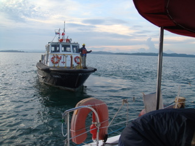
Après 4h30 de moteur, nous sommes arrivés en vue de l'écluse finale de notre transit. Nous nous sommes mis à couple avec un voilier chilien et nous nous sommes présentés devant l'écluse. Les 'handliners' nous ont directement lancé les cordes qui leur permettent de ramener les toulines, ces longs cordages qui nous maintiennent au centre de l'écluse.
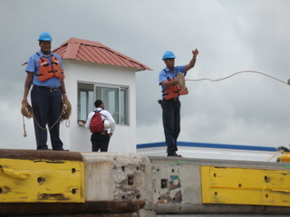
Ensuite, grâce aux SMS envoyés par Cécile, nous avons su que vous étiez nombreux à nous suivre sur la Webcam de l'écluse. Nous avons donc demandé aux enfants de former le drapeau belge pour que vous puissiez nous voir (et rigoler un peu). A ce propos, nous voyions un batiment ocre vers lequel nous agitions frénétiquement les bras, parce qu'on nous avait dit que la webcam était là...
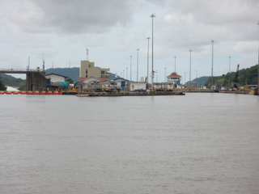
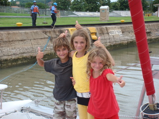
24 juin 2009 - Colon, le grand jour
Vers 15h, les 4 marineros sont arrivés. Nous étions supposés quitter la marina vers 17h et nous diriger calmement vers les écluses, à quelques 4 nm de notre bateau. Dès leur arrivée, ils nous ont dit qu'on devait larguer les amarres sur le champ car le pilote nous attendait à l'écluse pour un passage immédiat. Ce fut le branle-bas de combat: Cécile courru chercher les enfants à la piscine et, au passage, elle récupéra le linge qui finissait de sécher. Moi je réglai la facture de la marina, où ils n'hésitèrent pas, malgré mes protestations, à me faire payer 197 kW d'électricité pour 5 jours, soit 80$. L'amende pour faire attendre le pilote est de 500$, je n'ai donc pas insisté pour leur expliquer qu'une consommation pareille pour un bateau comme le nôtre serait incompatible avec le concept de tour du monde (ou alors que mes panneaux solaires sont plus efficaces que prévu).
C'est au pas de course que je suis revenu au bateau, où les marineros avaient déjà largué les amarres. A peine le temps de sortir du port et ce fut le déluge. Un orage violent qui nous mouilla tous en 5 minutes, malgré le bimini. Dans ces conditions dantesques, on discerna à peine le remorqueur qui nous amenait le pilote (advisor, comme ils préfèrent le nommer). Le vent violent avait levé une petite mer et les 2 bateaux tanguaient côte à côte, comme s'ils faisaient un pas de danse désordonné. Après 3 tentatives, l'advisor finit par mettre pied à bord du Let It Be. Sa présence est obligatoire pour la traversée du canal. Il donne des conseils de navigation et d'amarrage dans les écluses.
L'orage fut de courte durée mais nous étions en retard et nous avons dû passer notre tour. On s'est donc mis au mouillage à deux encablures de l'entrée de l'écluse et nous avons attendus qu'on nous donne un autre créneau pour passer. Par chance, c'est arrivé après à peine 50 minutes et nous avons pris le sillage d'un cargo slovène, avec lequel nous avons franchi les 3 écluses.
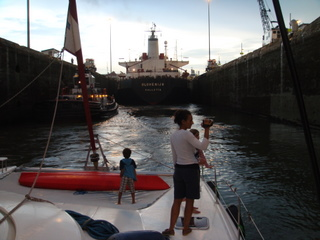
L'entrée de la première écluse avec, à gauche, le remorqueur avec lequel nous nous sommes mis à couple
Grâce à l'expérience de nos marineros, le passage fut calme et aisé, rien à voir avec les descriptions apocalyptiques qu'on avait pu lire ou entendre auparavant. Le remplissage de l'écluse se fait avec une rapidité surprenante et les remous sont impressionnants mais le bateau bouge très peu (vraisemblablement grâce à l'amarrage au remorqueur). Vers 20h, nous arrivions au lac Gatun.
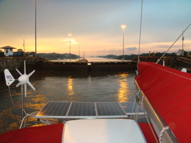
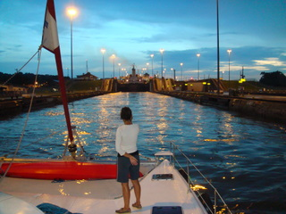
La vue de l'arrière et la vue sur les 2ème et 3ème écluses
23 juin 2009 - Colon, plus qu'une fois dormir
Avant notre grand saut, il nous restait quelques détails à régler. En premier lieu, il nous fallait un peu de nourriture: 80L de vin, 100L de soda, eau et bière, 20 kg de viande et salaison, 15 kg de farine, 15 kg de charbon, des nouilles et pâtes, des fruits et légumes, de l'huile et des tas d'autres trucs. Nous avons pris la navette et nous sommes allés à Colon pour faire nos emplettes.
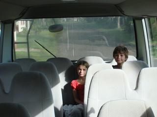
Dès notre retour, je me suis remis à la réparation des câbles d'étouffoir. Pendant ce temps, sous la houlette de Cécile, les enfants ont lavé la coque du bateau. Il fallait profiter de la marina et de son eau courante abondante pour briquer le pont. Cécile a réussi à trouver de la place pour mettre toutes nos courses, ce qui relève maintenant de la prouesse, voire de la magie car notre bateau est bien chargé.
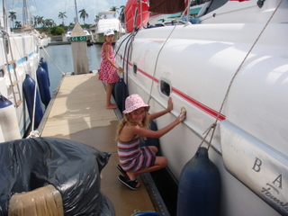
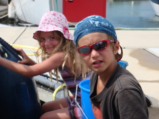
Les mousses moussent
22 juin 2009 - Colon, passage prévu dans 2 jours
Aujourd'hui, nous avons franchi une étape de plus dans notre transit. Stanley, notre agent, nous a emmené à Colon pour l'obtention du visa. Nous nous sommes donc présentés au guichet du ministère de l'immigration afin d'obtenir le précieux tampon.
Les bureaux de l'immigration et la cueillette des mangues
En revenant, nous avons fait un détour par le cimetière pour cueillir quelques mangues. Ensuite nous sommes rentrés au bateau pour admirer notre nouveau trampoline. Nous l'avons installé hier, en plein cagnard, et nous sommes tous deux très satisfaits de notre travail, même si cela nous a demandé 4h de boulot.
En fin de journée, j'errais, désoeuvré, dans la marina en me demandant: 'Que vais-je donc bien faire maintenant ?' Bien sûr, la réponse triviale est: 'Boire une bière'. Mais j'aime le risque. Aussi ai-je décidé de faire la vidange d'huile des moteurs. J'en entend rigoler d'ici mais pour moi, c'est une nouvelle expérience. J'ai donc saisi ma pompe à dépression et me suis dirigé d'un pas décidé vers la cale bâbord. J'ai assez rapidement constaté que le tuyau d'aspiration de ma pompe était plus gros que celui de la jauge, par lequel j'étais supposé aspirer l'huile usagée. J'ai donc appelé mon copain Mac Gyver et après quelques essais dont je vous passe les détails mais qui se sont soldés par une répartition quasi-homogène d'huile dans toute la cale, j'ai enfin réussi à vidanger les moteurs.
Le Panama, c'est sympa mais qu'est-ce qu'il fait chaud ici ! Et en plus, il pleut toutes les heures...Cécile a profité des machines de la marina pour rénover notre linge et notre literie car à stagner pendant des semaines dans ces conditions genre sauna, toutes nos serviettes et nos vêtements pourrissent littéralement sur place. (Si, si, je vous assure, il y a des petits champigons verts sur nos vêtements bien pliés dans les armoires).
Par ailleurs, lors de nos dernières emplettes à Colon, j'ai pu dénicher un ventilo sur pied en 220V. Le bonheur à l'état pur, sans rire. Depuis ce judicieux achat, Cécile et moi coulons enfin des nuits heureuses, dans une petite brise, certes artificielle, mais qu'importe le flacon, pourvu qu'on ait l'ivresse !
20 juin 2009 - Colon, préparatifs en vue du transit
C'est un peu bizarre mais la marina de Shelter Bay, située en ex-zone américaine du canal, constitue la charnière entre notre voyage Atlantique et celui à venir: la traversée du Pacifique. Nous éprouvons tous une impression bizarre, teintée de curiosité et d'amertume car nous savons que notre 'grand' voyage va vraiment commencer maintenant. En attendant, on a pris contact avec Stanley, notre 'agent' qui va se charger de l'incroyable paperasserie nécessaire pour franchir le Canal. Evidemment, chaque formalité coûte de l'argent: le montant nominal, la taxe de fonctionnaire et l'obole à l'agent, plus vraisemblablement quelques pièces à gauche ou à droite pour faciliter le processus. Actuellement, nous avons déjà payé le clear in (douanes), l'immigration et le permis de croisière. Il nous reste les visas, le passage, les défenses (ce sont les pneus qu'on met sur les côtés du bateau pour le protéger), les toulines (de grosses amarres pour nous maintenir au centre de l'écluse), les marineros (qui manipulent les toulines), le capitaine (qui guide le bateau), l'agent (celui qui fait toutes les démarches à notre place) et le clear out. Au total, on va quand même débourser près de 1.700$ (contre +/- 1.200$ si on avait choisi la solution la moins chère: celle où l'on se débrouille tout seul). Je ne me rappelle plus où j'ai lu que plus un pays est corrompu, plus compliquées sont les procédures, mais il me semble que cette personne devait penser au Panama...
Stanley, notre agent, sans lequel il nous faudrtait 2 mois pour passer le canal
Quoiqu'il en soit, la machine est lancée et nous devrions franchir le canal les 24 et 25 juin. En attendant, nous profitons des services de la marina pour nous livrer à nos activités favorites: les enfants sont dans la piscine du matin au soir, Cécile fait des lessives et des séchoirs et papa boit des bières. Non, c'est pour rire, je bricole, comme d'habitude.
L'étouffoir tribord pend misérablement
La dernière panne en date est celle du câble d'étouffoir du moteur tribord qui a cassé net. J'ai donc démonté le câble tribord puis celui bâbord (qui était tellement dur que Cécile n'arrivait plus à éteindre le moteur). Ca paraît idiot, mais pour démonter ces câbles qui vont du poste de pilotage aux moteurs et qui mesurent 10m une fois complètement dépliés, il m'a fallu au moins 3h. Maintenant, il reste à espérer que l'on va pouvoir me les reproduire à l'identique et que je mettrai moins de temps à les remettre en place (ce dont je doute).